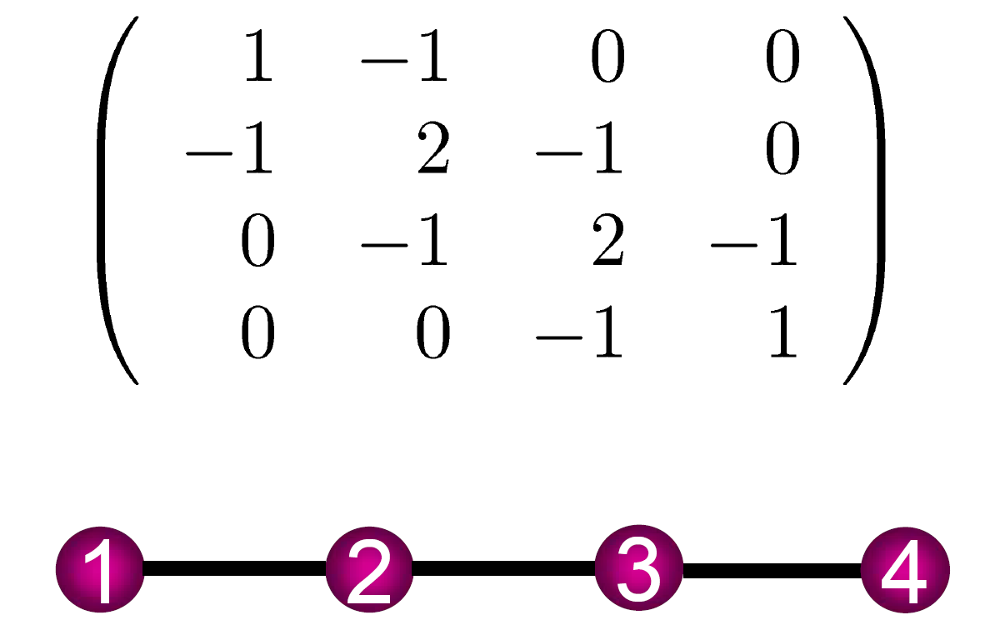

## <div style="text-align: justify"> **3D Medical Image Registration** *using* **Spectral Graph Features**</div> <br> <div style="text-align: right">*by* **Çağdaş Bilen** <br> <br> *under supervision of*<br> **Vincent Noblet** *and* **Fabrice Heitz**</div>
## Overview + Intra-patient Registration with **SyN** - Results + Porposed for Inter-patient: **SyN** + **SF** - Summary of Spectral Features (**SF**) - **SF** for abdomen: **SyN** + **SF** - Challenges of **SF** for medical image registration - Our Progress
## **SyN** For Intra-Patient Registration Symmetric diffeomorphic registration (**SyN**) is one of the strongest deformable registration algorithms We have applied multi-level **SyN** for intra-patient registration for **3 different patients**, **5 total registration cases** | Patient | CT images | Manual Label | | --------- | --------- | ----- | | Patient 1 | 3 images | liver + hepatic veins | | Patient 2 | 2 images | liver + hepatic veins | | Patient 3 | 2 images | liver + hepatic veins |
## Experimental Results DICE scores with **SyN** (6 levels) | Images | DICE Liver | DICE HVeins | | --------- | --------- | ----- | | Patient 1 CT1-CT2 | **97.40** % | **61.44** % | | Patient 1 CT1-CT3 | **97.75** % | **47.74** % | | Patient 1 CT2-CT3 | **97.64** % | **45.06** % | | Patient 2 CT1-CT2 | **96.45** % | **58.42** % | | Patient 3 CT1-CT2 | **95.16** % | **43.73** % | **Scores are limited due to some errors in manual labeling !**
## Experimental Results <div class="fragment current-visible" style="text-align: center"> Patient 1 CT1-CT2 , Liver:**97.40** % , HVeins:**61.44** %<br> <img class="plain" align="left" src="resources/p1_ct12_org_d2_comparison.gif" width=50%> <img class="plain" src="resources/p1ct12_dipy_d2_comparison.gif" width=50%><br> Before registration `$\qquad\qquad$` After Registration </div> <div class="fragment current-visible" style="text-align: center"> Patient 1 CT1-CT3 , Liver:**97.75** % , HVeins:**47.74** %<br> <img class="plain" align="left" src="resources/p1_ct13_org_d2_comparison.gif" width=50%> <img class="plain" src="resources/p1ct13_dipy_d2_comparison.gif" width=50%><br> Before registration `$\qquad\qquad$` After Registration </div> <div class="fragment current-visible" style="text-align: center"> Patient 1 CT2-CT3 , Liver:**97.64** % , HVeins:**45.06** % <br> <img class="plain" align="left" src="resources/p1_ct23_org_d2_comparison.gif" width=50%> <img class="plain" src="resources/p1ct23_dipy_d2_comparison.gif" width=50%><br> Before registration `$\qquad\qquad$` After Registration </div> <div class="fragment current-visible" style="text-align: center"> Patient 2 CT1-CT2 , Liver:**96.45** % , HVeins:**58.42** % <br> <img class="plain" align="left" src="resources/p2_ct12_org_d2_comparison.gif" width=50%> <img class="plain" src="resources/p2ct12_dipy_d2_comparison.gif" width=50%><br> Before registration `$\qquad\qquad$` After Registration </div> <div class="fragment current-visible" style="text-align: center"> Patient 3 CT1-CT2 , Liver:**95.16** % , HVeins:**43.73** % <br> <img class="plain" align="left" src="resources/p3_ct12_org_d2_comparison.gif" width=50%> <img class="plain" src="resources/p3ct12_dipy_d2_comparison.gif" width=50%><br> Before registration `$\qquad\qquad$` After Registration </div>
### Improving the **SyN** with **Spectral Features (SFs)** <p class="fragment fade-up">The **intra-patient** registration is **sufficiently good</p>** <p class="fragment fade-up">However **inter-patient** registration is still **poor**</p> <p class="fragment fade-up"><span style="color:green">We propose to use **Spectral Features (SFs)** to improve the performance</span></p>
## Spectral Features ### A brief summary to Spectral Graph Theory
## Spectral Features For a given graph, $\mathit{G}$, with **weight matrix**, $\mathbf{W}$, we can compute the graph laplacian as: `$\mathbf{L} = \mathbf{D} - \mathbf{W} \qquad \text{where }\mathbf{D} \triangleq \text{diag}(d_i),\quad d_i \triangleq \sum_j w_{ij}$` <div style="text-align: center"></div>
## Spectral Features * <p class="fragment fade-up">The **eigenvectors** of the graph laplacian, form an **orthonormal basis** for all functions over the graph</p> * <p class="fragment fade-up">These **eigenvectors** are **invariant** to geometric transformations over the graph</p> <p class="fragment fade-up" style="text-align: center">Mesh model example: </p>
## Spectral Features <p class="fragment fade-up">We can build **a graph from pixels in images** with the weights between pixels decided by a function, `$w_{ij}(I_i, I_j, \mathbf{x_i}, \mathbf{x_j})$` </p> <p class="fragment fade-up" style="text-align: center">Example over images, `$\quad w_{ij} = \frac{1}{(\mathbf{x_i}-\mathbf{x_j})^2}e^{\frac{(I_i-I_j)^2}{\sigma^2}}$` <img class="plain" src="resources/features_lena.png" width=75%/></p>
## Spectral Features #### How to utilise for registration <p class="fragment fade-up">These eigenvectors are **spectral features** that can be used for motion/deformation estimation</p> <p class="fragment fade-up">We can use $k$ **least spatially localized SFs** in addition to the original images for registration</p>
## **SyN** and **SF** * <p class="fragment fade-up">**SyN** is already demonstrated to be performing well for deformable image registration</p> * <p class="fragment fade-up">We propose to combine the **SyN** algorithm with the **SFs** for more robust and improved image registration for Liver CT</p> * <p class="fragment fade-up">The use of **SF** is complementary to the advatages of **SyN**, hence almost no drawback</p>
## Challenges of **SF** * <p class="fragment fade-up"> The **order of eigenvectors** for each image(volume) is not always the same for both (for close eigenvalues)</p> * <p class="fragment fade-up"> The eigenvectors have an inherent **sign ambiguity**</p> <p class="fragment fade-up"><span style="color:blue">Hence the comparison is **not always trivial**</span></p> <p class="fragment fade-up"><span style="color:red"> **Eigen-value decomposition is not feasible for large (3D) data, $O(kN^2)$**</span></p>
## Our Progress <span style="color:blue">Comparison is **not always trivial**</span> <p class="fragment fade-up">This problem can be mostly solved by checking the **correlation coeffients** between all of the **SFs**</p> <p class="fragment fade-up">`$\Rightarrow$` Take the **most correlated** pairs, **invert** if reverse correlation</p>
## Our Progress <span style="color:red"> **Eigen-value decomposition is not feasible for large (3D) data, $O(kN^2)$**</span> <p class="fragment fade-up">We can reduce $N$ by downsampling the image</p> <p class="fragment fade-up">`$\Rightarrow$` **ALL THE DETAILS IN THE IMAGE ARE LOST!**</p>
## Our Progress <span style="color:red"> **Eigen-value decomposition is not feasible for large (3D) data, $O(kN^2)$**</span> Instead we can use **supervoxels** ! </p>
## Our Progress The range of intensities in CT images are very large <p class="fragment fade-up">`$\Rightarrow$` **The supervoxels do not well represent our region of interest (liver) !**</p> <p class="fragment fade-up" style="text-align: center"><img class="plain" src="resources/ct_norm_svx.png" width=60%/></p>
## Our Progress We can **_modify the histogram of the image_** to focus on the **_region of interest_**
## Our Progress #### Finding best weight function <p style="text-align: center">`$w_{ij} = e^{\left(\frac{(I_i-I_j)^2}{\sigma_I^2}+\frac{(\mathbf{x_i}-\mathbf{x_j})^2}{\sigma_x^2}\right)}$`</p> <p>`$\sigma_I$` : Intensity difference for connected tissue `$\sigma_x$` : Distance between connected tissue</p> **Both parameters can be empirically selected**
## Our Progress #### Resulting **SFs** <p class="fragment current-visible" style="text-align: center"> 128000 supervoxels </p> <p class="fragment current-visible" style="text-align: center"> 16000 supervoxels </p> <p class="fragment current-visible" style="text-align: center"> 2000 supervoxels </p>
## Our Progress - <span style="color:green"> **DONE** </span> Solve the **SF** reordering/sign problem - <span style="color:green"> **DONE** </span> Use of supervoxels for the dimentionality reduction of eigen decomposition - <span style="color:green"> **DONE** </span> Improve the supervoxel efficiency for medical image registration - <span style="color:green"> **DONE** </span> Implement the proposed approach in **DiPy** library - <span style="color:orange"> **IN PROGRESS** </span> Test for bugs, optimize performance and parameters
## Discussions and Future Work - Performance of **SyN** is as well as could be expected - **SFs** so far seem promising for improving **SyN**, though many parameters to optimize - Further improvements possible by generating **SFs** in a more smart way (Deep learning?)